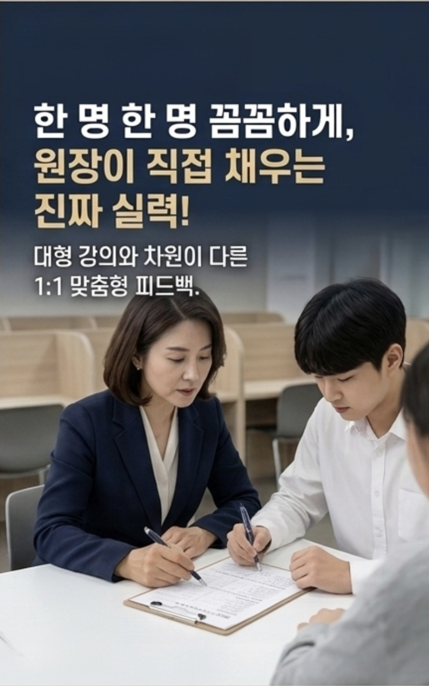

기본부터 채운 실력이
진짜 1등급을 만듭니다
대리 강사나 채점 아르바이트가 없습니다. 수업 분석부터 채점, 오답 피드백, 1:1 밀착 클리닉까지 원장이 직접 한 학생 한 학생 정성껏 지도하여 최상위 등급을 완성합니다.
김진아 원장 국어과 대표 원장
"국어 점수는 단순한 암기가 아닌,
글을 꿰뚫는 문해력과 철저한 오답 교정에서 완성됩니다."
25년 경력의 온/오프라인 강의 노하우와 다수의 베스트셀러 교재 검토 및 집필 경험을 바탕으로, 학생 한 명 한 명의 취약점을 정밀하게 파악합니다. 국어 공부의 바른 길을 원장이 직접 안내하겠습니다.
[ 약력 ]
- 現 천재 밀크티 고등 국어 강사
- 現 금성 푸르넷 강사
- 前 반포 한올 국어 전문 학원
- 前 대치동 국어 전문 학원
- 前 교육부 e학습터
- 前 인천 잎새 방송 강사
- 前 아이넷 스쿨 강사
- 前 에듀 클럽 강사
- 前 대교 공부와락 강사
- 前 1318 국어과 강사
- 前 고려 e 스쿨 강사
[ 교재 집필 ]
- 대한 교과서 깜지 '일등급' 국어 <집필진>
- 미래엔 내신 특강, 일등 만들기, 중등 '올리드' <검수>
- 꿈틀 '딱 걸렸어', '단감' <검토진>
- 디딤돌 '투탑' <검토진>
- 잎새 방송 중등 국어 교재 <검토진>
왜 원장 직강이어야 하는가
시간 때우기 식 수업은 성적을 바꿀 수 없습니다. 채움국어학원만의 차별화된 직강 관리 시스템을 확인하세요.
원장 직접 밀착 트래킹
학생의 매주 숙제 이행률, 오답 분석표 및 약점 피드백을 원장이 직접 하나하나 모니터링하고 기록하여 관리합니다.
직접 발간 자체교재
시중 교재로는 완벽할 수 없습니다. 수능/평가원 최근 7개년 경향 분석 및 지역 학교별 시험 기출을 완벽 분석한 특화 교재를 직접 집필합니다.
직접 채점 & 피드백
알바 조교에게 채점을 맡기지 않습니다. 일일 단어 테스트와 오답 분석을 원장이 직접 채점하여 학생의 논리 오류를 날카롭게 짚어냅니다.
무제한 질의응답 피드백
질문에 막힘없는 해결을 약속합니다. 학원 내 클리닉 시간 외에도 실시간 비대면 질의응답을 지원하여 끝까지 이해를 돕습니다.
학년별 최적화된 국어 로드맵
중등부 독해력 기반 다지기부터 고등부 수능/내신 1등급 완성까지, 탄탄하게 짜인 빈틈없는 커리큘럼입니다.
고등부 내신 전문 반
- 학교별 맞춤 대비
- 진성고, 광북고, 광명고 외 집중 분석
- 교과서 지문 완벽 분석 및 변형 문제 훈련
- 개인별 맞춤 오답 재유형 테스트
수능 국어 만점 대비 반
- 독서/문학/언매/화작 완벽 분석
- 평가원 기출 패턴 분석 및 실전 모의고사
- EBS 연계 교재 지문 심화 정복
- 오전 수능 시간 맞춤 두뇌 트레이닝 피드백
예비 고1 몰입 클래스
- 고등 국어 필수 문학/문법 개념어 마스터
- 고1 모의고사 기출 분석 및 적응 훈련
- 비문학 독해 & 문해력 기본기 확립
- 현대시, 현대소설의 핵심 감상법 훈련
철저한 피드백 순환 구조, 채움 클리닉
일반 조교에게 방치되는 자습이 아닙니다. 원장이 모든 과정을 면밀히 체크하여 성적 향상을 이뤄냅니다.

매주 수업 전 지난 수업 내용 복습 테스트 및 핵심 어휘 시험을 칩니다. 단순 단답형 채점이 아닌 원장이 오답 경로까지 살핍니다.
틀린 문항을 단순 해설지로 공부하지 않게 합니다. 원장과 마주 앉아 틀린 개념의 원인을 짚고 정답의 근거를 논리적으로 설명하도록 유도합니다.
틀린 지문과 난이도가 유사한 기출 문제 및 연계 오답 변형 문제를 맞춤형 봉투형 과제로 개별 배포하여 재오답을 철저히 차단합니다.
모든 성취 상태는 데이터화되어 학업 분석 리포트로 학부모님께 문자 또는 유선으로 원장이 직접 종합 피드백 의견과 함께 주간 전송됩니다.
우리 아이 국어 점수,
가장 빠르고 확실하게 채우는 방법
국어 성적의 정확한 진단 없이는 발전할 수 없습니다. 3분간 진행되는 간이 모의 진단 테스트를 해보시거나, 원장님과 직접 만나 꼼꼼한 상담을 예약해 보세요.
학원 오시는 길 & 상담 문의
-
학원 주소
경기도 광명시 디지털로 33번길 서창빌딩 3층 302호
-
상담 및 문의 전화
02 897 8734 (모바일 클릭 시 통화 연결)
-
상담 운영 시간
평일: 오후 2시 ~ 오후 10시 | 주말: 오전 9시 ~ 오후 9시
-
교통 안내
7호선 철산역 1번 출구 도보 5분거리